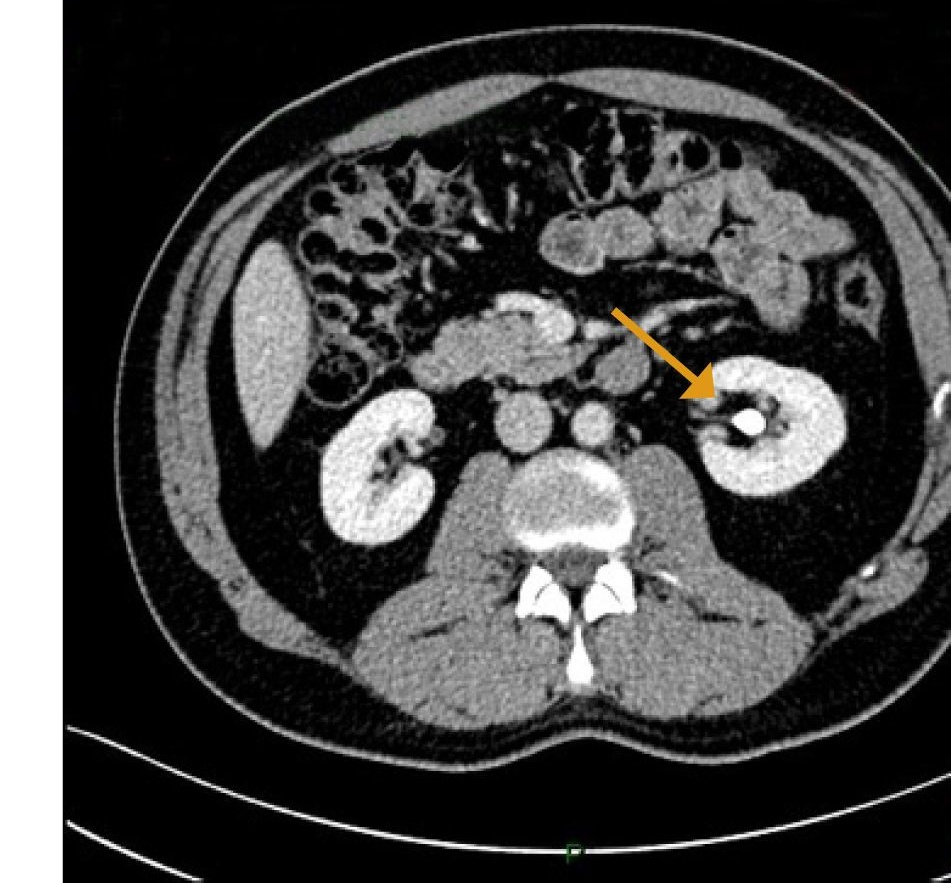

Seleccionar Paciente para Evaluación
Bandeja de Triage · Servicio de Urología
RG
CÓLICO AGUDO FID
Roberto García (44a)
HC-2026-08412 · Ingreso: Hoy 18:20
Dolor cólico unilateral derecho, microhematuria (+). Sospecha lito ureteral obstructivo.
TC: Corte axial L5-S1 (842 HU)
Abrir Planilla Clínica →
CM
ASINTOMÁTICA
Clara Méndez (56a)
HC-2026-03195 · Ingreso: Ayer 14:10
Control ginecológico. Calcificación pélvica incidental sin dilatación ureteral.
TC: Corte pélvico venoso (460 HU)
Abrir Planilla Clínica →
ML
DOLOR INESPECÍFICO
Martín López (38a)
HC-2026-11029 · Ingreso: Hoy 10:45
Dolor pélvico de 48h. Calcificación límite de 2.8 mm en estrecho pélvico.
TC: Corte de transición (590 HU)
Abrir Planilla Clínica →
Paciente Activo:
Roberto García (44a)
Ficha de Filiación & Antecedentes
años
Sintomatología & Motivo de Consulta
Parámetros de Marcadores
Biomarcadores Clínicos, Inflamatorios & RadiómicosMarcador A · Ratio HU
1.82 (Edema Parietal)
Densidad anillo vs luz ureteral
Marcador B · Inflamatorio
14.8 mg/L (PCR Elevada)
Proteína C Reactiva sérica
Marcador C · Hemodinámico
IR: 0.74 (Resistencia Alta)
Doppler arterial intrarrenal
Marcador D · Cristaluria
Oxalato Cálcico (++)
Cristaluria en orina fresca
Espacio modular listo para incorporar marcadores adicionales.
Activo
Laboratorio Estándar & Examen Físico
mg/dL
NOTA MÉDICA
Probabilidad Clínica Pre-Tomografía
Estimación basada en dolor, hematuria y antecedentes
ALTA (88%)
SCORE UROLÓGICO
Estudio Tomográfico & Radiológico
TC pelvis sin contraste · Corte axial L5-S1 · Nivel de uréter distal prevesical
Cortes Clínicos:

Estudio: TC Pelvis Sin Contraste
•
Densidad: 842 HU (Cálculo)
•
Medición: 4.2 mm
Diagnóstico Asistido & Clasificación Probabilística
Modelo Multimodal: Radiomics + Visión Convolucional + Cuadro Clínico
Lito Ureteral Distal
(Litiasis Obstructiva)
(Calcificación Venosa)
Flebolito Pélvico
93.4%
6.6%
ALTA PROBABILIDAD DE LITIASIS URETERAL
BAJA PROBABILIDAD DE FLEBOLITO
Desglose de Criterios Clínico-Radiológicos:
5 SIGNOS EVALUADOS
Trayecto Ureteral
Ubicación estricta sobre el recorrido del uréter distal prevesical.
Signo del Halo (Rim Sign)
Halo circunferencial de tejido blando (1.8 mm) por edema parietal.
Cola de Cometa (Comet-Tail)
Ausente. No se visualiza prolongación tubular venosa contigua.
Obstrucción Secundaria
Dilatación ureteral proximal (> 4 mm) y estriación periureteral.
Densidad & Morfología de la Calcificación
Morfología facetada irregular con alta densidad homogénea (842 HU). Sin lucencia central radiológica.
Conducta Médica Recomendada (Servicio de Urología):
MET RECOMENDADO
Lito de 4.2 mm no complicado en uréter terminal derecho con adecuada función renal. Se sugiere Tratamiento Expulsivo Médico (MET) con Tamsulosina 0.4 mg/día + hidratación reglada y analgesia pautada. Control ecográfico/clínico en 72 horas. Ante persistencia de dolor o fiebre, coordinar evaluación para ureteroscopia (URS).
ID ANÁLISIS: AN-2026-X8841